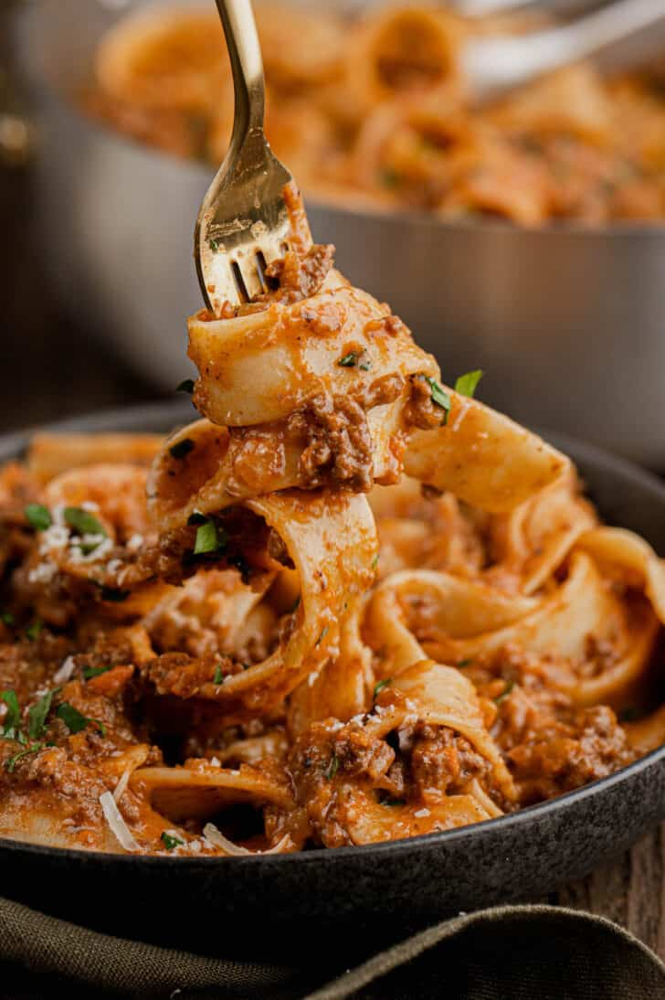

Lamb Bolognese Recipe

Ingredients
- White Onions x 3
- Celery x 3 or 4 (approx similar amount of carrot)
- Carrots x 4
- 800g mince meat
- Dried arbol chillies x 8
- Garlic cloves x 8 (crushed)
- Anchovies x 1 pack
- Tomato paste x 1 jar 180g
- Red wine x 150ml
- Chicken stock (500ml)
- Basil (small bunch)
- Oregano (small bunch)
- Rosemary (small bunch)
- Bay leaves x 2
- Cooking string
- Parmesan cheese + 2 x rinds
Method
- Dice up the onions, celery and carrots (very small!). We are looking for a ratio of 2:1:1 ratio of onions:celery:carrots.
- In a pan, heat some olive oil and add the dried chilis.
- Cook until you can smell them and remove from oil.
- Brown off the meat in the oil.
- Remove the meat into the sieve over a bowl, and use some of the juice to cook the sauce.
- Add the onions, garlic, carrots and celery, cook it until it's softened (10-12 mins).
- Dice up the anchovies and add these.
- Add the tomato paste & cook it down until you get sticky bits on the pan.
- Add the red wine to deglaze and cook until the alcohol has burned off.
- Add the meat back in and add chicken stock.
- Wash and tie up a couple of springs of basil, oregano, rosemary, and 2 x bay leaves (this is called a bouquet garni).
- Add the bouquet garni into the pot along with the parmesan rinds.
- Cook for 1 hour on a low simmer, then remove the rinds and garni.
- Cut up a couple of sprigs of fresh basil and cut up 2 of the red chillies from earlier. Add these into the pot.
- Serve with pasta and grate some parmesan over and a few cracks of black pepper before you eat.
Home